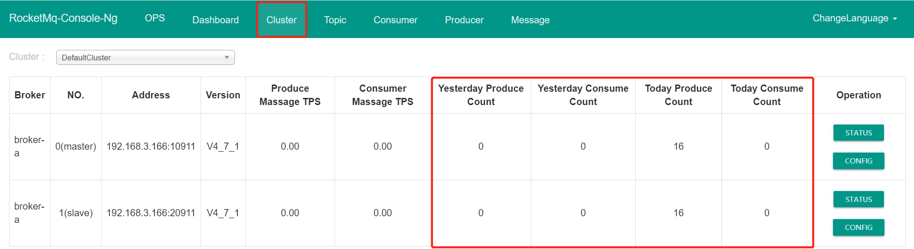
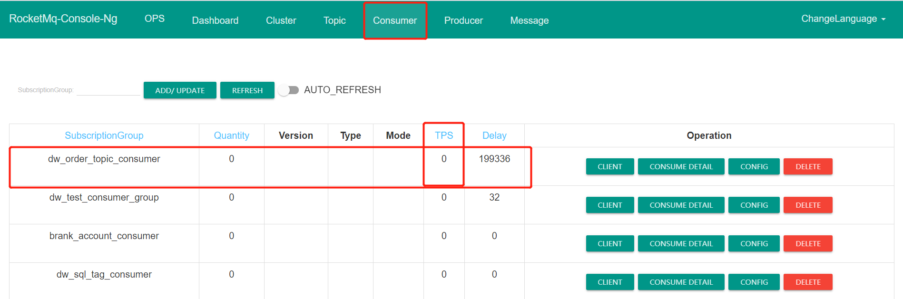
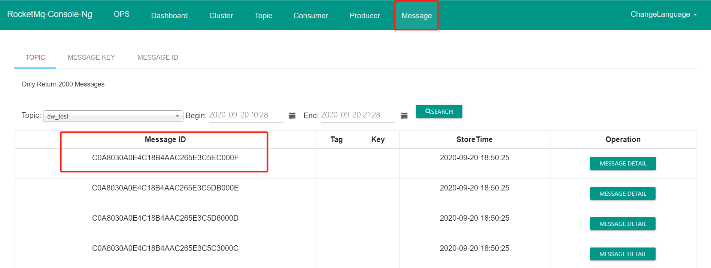
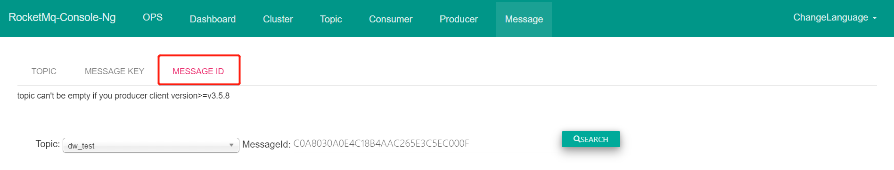
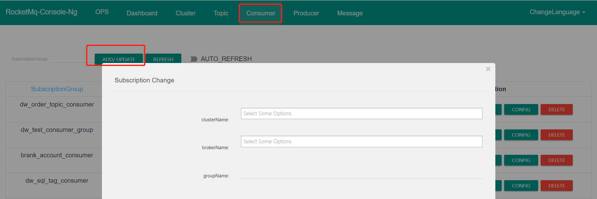
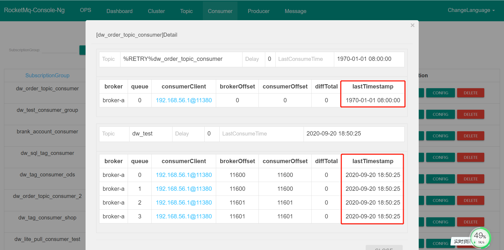

- 01 搭建学习环境准备篇.md
- 02 RocketMQ 核心概念扫盲篇.md
- 03 消息发送 API 详解与版本变迁说明.md
- 04 结合实际应用场景谈消息发送.md
- 05 消息发送核心参数与工作原理详解.md
- 06 消息发送常见错误与解决方案.md
- 07 事务消息使用及方案选型思考.md
- 08 消息消费 API 与版本变迁说明.md
- 09 DefaultMQPushConsumer 核心参数与工作原理.md
- 10 DefaultMQPushConsumer 使用示例与注意事项.md
- 11 DefaultLitePullConsumer 核心参数与实战.md
- 12 结合实际场景再聊 DefaultLitePullConsumer 的使用.md
- 13 结合实际场景顺序消费、消息过滤实战.md
- 14 消息消费积压问题排查实战.md
- 15 RocketMQ 常用命令实战.md
- 16 RocketMQ 集群性能摸高.md
- 17 RocketMQ 集群性能调优.md
- 18 RocketMQ 集群平滑运维.md
- 19 RocketMQ 集群监控（一）.md
- 20 RocketMQ 集群监控（二）.md
- 21 RocketMQ 集群告警.md
- 22 RocketMQ 集群踩坑记.md
- 23 消息轨迹、ACL 与多副本搭建.md
- 24 RocketMQ-Console 常用页面指标获取逻辑.md
- 25 RocketMQ Nameserver 背后的设计理念.md
- 26 Java 并发编程实战.md
- 27 从 RocketMQ 学基于文件的编程模式（一）.md
- 28 从 RocketMQ 学基于文件的编程模式（二）.md
- 29 从 RocketMQ 学 Netty 网络编程技巧.md
- 30 RocketMQ 学习方法之我见.md
24 RocketMQ-Console 常用页面指标获取逻辑
本文的目的不是详细介绍 RocketMQ-Console 的使用方法，主要对一些关键点（更多是会有疑问的点）进行介绍，避免对返回结果进行想当然。
集群信息一览

可以通过 Cluster 查看一个集群中所有的 Broker 信息，包含主节点、从节点，有时候发现主节点、从节点的一些统计指标存在一些偏差，例如 Slave 节点的 Today Producer Count 比主节点的低或者高，会简单认为出现错误，其实大可不必太在意，说明如下：
RocketMQ 的数据统计是基于时间窗口，并且数据是存储在内存中，一旦 Broker 节点重启，所有的监控数据都将丢失，而且主从同步数据存在时延，统计不一致很正常。如果主 Broker 节点重启过，统计中的数据会少于从节点，同样如果从 Broker 节点重启过，主节点就会超过从节点。
消费 TPS 只统计主节点

在 Consumer 的菜单中，显示的 TPS 表示的消息消费 TPS，但值得注意的是数据只来源于主节点，并不会统计从节点的数据，笔者有一次碰的一个消费端问题，需要重置消费端的位点到几天前，显示的效果是 Delay（消息积压）会减少，但 TPS 一直为 0，这就是因为重置位点后出发了消息消费时切换到了从节点，导致从节点上的消费 TPS 并没有被统计。
RocketMQ msgId

在 RocketMQ 中存在两个消息 ID，offsetMsgId（记录了消息的物理偏移量等信息）、msgId（消息全局唯一 ID），那在该列表中返回的消息的 ID 是哪个 ID 呢？这里显示的是 msgId。
在根据 MESSAGE ID 进行消息查找时，下面这个界面即可用输入 msgId 也可以输入 offsetMsgID 进行查询。其操作界面如下：

那这里又是为什么呢？这个是因为 RocketMQ-Console 做了兼容，会首先尝试按照 offsetMsgId 去查询，如果查询失败，则再次使用 msgId 去快速查询。通过 offsetMsgId 能快速查询到消息这个不奇怪，因为 offsetMsgID 中包含了 Broker 的 IP 地址与端口号以及物理偏移量，那如何根据 msgId 快速检索消息呢？答案是通过 Hash 索引，全局唯一 ID 在 RocketMQ 中 msgId 的另外一个名词叫 UNIQ_KEY，会存入 index 索引文件中。
创建订阅关系
在 RocketMQ 中不仅可以关闭自动创建主题，其实还可以关闭自动创建消费组，可通过设置属性 autoCreateSubscriptionGroup 为 false 关闭自动创建消费组，这样必须先通过命令或界面手工创建消费组，项目组才能使用该消费组用来消费消息，在生产环境中建议将其设置为 false，这样更加管控性，在 RocketMQ 中可以通过该界面添加消费组订阅信息：

关于 RocketMQ-Console 中的 lastTimestamp 时间说明

通常大家会看到 lastTimestamp 的时间会显示 1970 年，这是为什么呢？
首先 lastTimestamp 在“查看消息消费进度”时表示的意思是当前消费到的消息的存储时间，即消息消费进度中当前的偏移量对应的消息在 Broker 中的存储时间。再结合 RocketMQ 消息消费过期删除机制，默认一条消息只存储 3 天，三天过后这条消息会被删除，如果此时一直没有消费，消息消费进度代表的当前偏移量所对应的消息已被删除，则会显示 1970。
RocketMQ 的使用还是比较简单的，本文重点展示的是一些容易引起“误会”的点，暂时想到就只有如上如果大家对 RocketMQ-Console 的使用有有其他一些疑问，欢迎大家加入到官方创建的微信群。
© 2019 - 2023 Liangliang Lee. Powered by gin and hexo-theme-book.